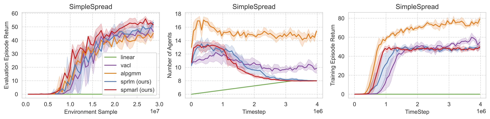
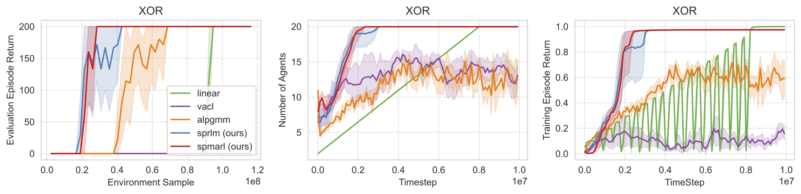

Motivation
In the MPE Simple-Spread task, agents (blue circles) need to cover as many landmarks (red circles) as possible. With the number of landmarks fixed, 20 agents shown on the right can easily complete the task and achieve higher returns compared to 8 agents on the left. However, a higher number of agents exacerbates the credit assignment problem in policy learning.
Experiments
Simple Spread
Comparison on the Simple-Spread task, where the target is set with 8 agents and 8 landmarks. The plots are averaged over 5 random seeds and the shadow area denotes the 95% confidence intervals. The left figure shows the evaluation returns on the target task with 8 agents. Note that the x-axis represents the samples collected from the environment, which is proportional to the number of agents. The middle figure presents the generated curriculum from different methods, where SPMARL and SPRLM first generate more agents and then converge to the target 8 agents, while ALPGMM and VACL always generate more agents. The right figure shows the episode returns on the training tasks. The ALPGMM algorithm achieves the highest because it samples tasks with more than 14 agents.

XOR Game
Comparison on the 20-player XOR game where each agent needs to output different actions to succeed. While the linear curriculum from few to more (linear) and alpgmm successfully achieve optima eventually, SPRLM and SPMARL demonstrate a faster convergence.

SMAC-v2 Tasks
Comparison on SMACv2 Protoss tasks. From top to bottom row, the tasks are Terran 5 vs. 5, Terran 6 vs. 6, Zerg 5 vs. 5, and Zerg 6 vs. 6. Across all four tasks, SPMARL achieves performance that is comparable to or better than all baseline methods.


Ablation on VLB
Ablation of VLB on SMACv2 Protoss tasks. From top to bottom, the tasks are Protoss 5 vs. 5 and Protoss 6 vs. 6. The results indicate that SPMARL performs robustly across a broad range of VLB.